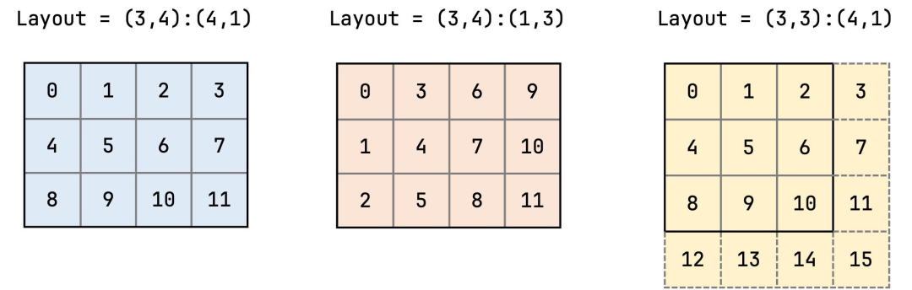

flowchart LR
Coord["逻辑坐标 (m, n)"] --> InnerProduct["坐标与步长做代数内积: offset = m * stride_m + n * stride_n"]
InnerProduct --> MemOffset["物理内存一维下标 1D Pointer Offset"]
MemOffset --> Memory["高效定位全局显存或共享内存单元"]
第 2 课：CuTe Layout：Shape、Stride 与坐标映射
参考答案版：包含完整代码实现与问答题深度参考解析。建议先独立完成练习题后再展开核对。
本课目标与完成标准
学完后你应能：读写 shape:stride，手算坐标到线性索引，并识别 layout 的余域与别名。
通过必须同时满足：
- 独立补齐本课唯一的代码填空题，并通过给定检查；
- 三个问答题均说明因果链，而不是只报术语；
- 能指出至少一个正确性边界和一个性能取舍；
- 总分不低于 8/10，且没有一票否决级概念错误。
前置关系
- 课程前置：CUDA 线程模型、GEMM、C++ 模板基础
- 本课在路线中的作用：CuTe Layout 是坐标到整数索引的函数，由层级 Shape 和 Stride 组合；它描述映射，不拥有内存。
核心心智模型
核心操作与执行流程图解

图 2-1：CuTe Layout 核心代数：Shape、Stride 与多维逻辑坐标到一维内存物理偏移的映射
图 2-2：CuTe 核心代数坐标变换与内存地址计算流水
1. 它是什么，解决什么问题
CuTe Layout（布局代数） 是 CUTLASS 3.x 的数学基石与核心抽象。它彻底重构了高性能 CUDA 编程中“张量数据在内存与寄存器中如何排布”的认知体系。
传统 CUDA 编程的坐标地狱 vs. CuTe 布局代数（结合图 2-1 与图 2-2）： - 传统指针黑魔法的痛点：在手写 CUDA 代码时，开发者充斥着类似 ptr[b * stride_b + m * lda + n] 这样散落且易错的手工一维偏移量计算。一旦遇到行主序、列主序对调、跨步填充（Padding）或分块转置，整个内核中的索引宏与硬编码偏移就会彻底失控； - CuTe 的纯函数定义：Layout 是一个纯数学函数映射： \[f: \text{Domain (多维逻辑坐标)} \to \text{Codomain (一维线性物理偏移)}\] 由形状元组（Shape）与步长元组（Stride）精确配对组合而成：\(\text{Layout} = (\text{Shape}, \text{Stride})\)；
- 内存所有权完全解耦：Layout 自身不占用任何实际物理显存，也不拥有内存所有权；它只是一个编译期元数据对象。CuTe 的张量（Tensor）概念就是“数据指针（Engine）+ 布局（Layout）”的简洁绑定：
make_tensor(ptr, layout)。
2. 它如何工作（结合图 2-1 与图 2-2）
CuTe Layout 将多维坐标映射到一维物理地址的通用代数内积流程：
- 基础二维映射：
- 设布局定义为
(M, N) : (sM, sN)； - 逻辑坐标输入为 \((m, n)\)，其中 \(0 \le m < M, \ 0 \le n < N\)；
- 输出的物理线性偏移量计算为： \[\text{offset} = m \cdot sM + n \cdot sN\]
- 设布局定义为
- 主序性（Majorness）的步长表现：
- 列优先（Column-Major）：
Shape = (M, N), Stride = (1, M)。第 0 维（行坐标）步长为 1，相邻行物理连续； - 行优先（Row-Major）：
Shape = (M, N), Stride = (N, 1)。第 1 维（列坐标）步长为 1，相邻列物理连续。
- 列优先（Column-Major）：
- 分层嵌套形状（Hierarchical / Nested Layout）：
- Shape 和 Stride 可以是任意递归嵌套的 Tuple，例如： \[\text{Shape} = ((4, 8), 16), \quad \text{Stride} = ((1, 4), 32)\]
- 这允许开发者将“Warp 内部 32 线程的 \(4 \times 8\) 排布”与“跨 Warp 的外层维度”在同一个强类型 Layout 中直接层级组合，彻底消除了手工多层下标折算的工程复杂度。
3. 正确性条件与常见误区
size与cosize的致命混淆（显存越界重灾区）：size(Layout)：定义域中逻辑元素的总个数，即 \(\prod \text{shape}_i\)；cosize(Layout)：值域中实际覆盖的一维物理内存跨度大小，即 \(\max_{c \in \text{Domain}} f(c) + 1\)；- 致命误区：在带步长跨步（Padded/Strided）的张量中，
cosize远远大于size！若错误地按照size() * sizeof(T)去cudaMalloc分配显存，一旦访问边界坐标，就会直接发生非法显存越界段错误（cudaErrorIllegalAddress）；
- 别名（Aliasing）与非单射映射：
- 当某维度的 Stride 设为 0 时（广播操作），多个不同的逻辑坐标会映射到同一个物理内存位置；在只读场景下合法，但在并行写回输出时会导致严重的并发写覆写冲突。
4. 性能与工程取舍
- 静态编译期常量（
Int<N>）vs. 动态运行时维度：- 若使用
cute::Int<M>{}定义静态编译期常数，C++ 编译器会展开所有乘加运算，将步长乘法完全优化为移位指令或单周期地址计算，并在编译期通过模板元编程证明不存在越界与 Bank 冲突； - 若引入动态运行时维度，灵活性提升，但编译器无法进行代数化简（Algebraic Simplification），会引入额外的运行时乘法指令与寄存器开销。
- 若使用
具体演示：行主序 vs. 列主序及 Padded Layout 手算对验
考虑形状为 \(2 \times 3\) 的矩阵（行数 \(M=2\)，列数 \(N=3\)）：
- 行优先布局（Row-Major）：
- 定义：
layout = make_layout(make_shape(2, 3), make_stride(3, 1))； - 坐标 \((m=1, n=2)\)（第 1 行第 2 列）： \[\text{offset} = 1 \times 3 + 2 \times 1 = 5\]
- 逻辑大小
size = 2 * 3 = 6，物理跨度cosize = 1 * 3 + 2 * 1 + 1 = 6（紧凑映射，size == cosize）。
- 定义：
- 带列填充的布局（Padded Strided Layout）：
- 假设为满足 128 字节硬件对齐，将每行的有效 3 列填充到 8 个槽位：
- 定义：
layout_padded = make_layout(make_shape(2, 3), make_stride(8, 1))； - 坐标 \((m=1, n=2)\) 的线性地址： \[\text{offset} = 1 \times 8 + 2 \times 1 = 10\]
- 逻辑元素数
size = 2 * 3 = 6个，但实际内存最大占用跨度为： \[\text{cosize} = (1 \times 8 + 2 \times 1) + 1 = 11 \text{ 个元素}\] - 此时必须严格分配至少 11 个元素的物理显存，否则末尾元素写入必然越界崩溃。
实践任务：唯一代码填空题
补齐 row-major CuTe layout 的 stride。
规则：只能修改 TODO/______ 所在位置；不要删除断言或放宽误差。代码注释说明了每个边界条件。
Code
%%writefile /tmp/cute_layout.cu
#include <cute/layout.hpp>
using namespace cute;
int main() {
auto layout = make_layout(make_shape(Int<2>{}, Int<3>{}),
make_stride(______, ______));
static_assert(decltype(layout(Int<1>{}, Int<2>{}))::value == 5);
}检查方法
在配置 CUTLASS include 路径后用 nvcc 编译；无环境时手算 6 个坐标映射并检查无别名。
提交时请给出：补齐后的代码、实际运行输出（环境不可用时注明“仅静态审查”）以及对失败用例的解释。
Q1
不要背定义：请从输入、状态变化和输出三个阶段解释“CuTe Layout：Shape、Stride 与坐标映射”的工作机制。
你的答案：
Q2
把 size 当作实际占用地址范围会在哪种 stride 下出错？
你的答案：
Q3
如何用 layout 表示 batch 维有 padding 的矩阵？
你的答案：
评分与通过规则
- 代码 4 分：正常输入 2 分，边界输入 1 分，解释实现 1 分；
- Q1～Q3 各 2 分；
- 一票否决：结果碰巧正确但核心因果链错误、删除边界检查、把未运行结果说成实测。
需要提示时按四级机制请求：概念区域 → 具体方向 → 关键局部 → 完整答案。